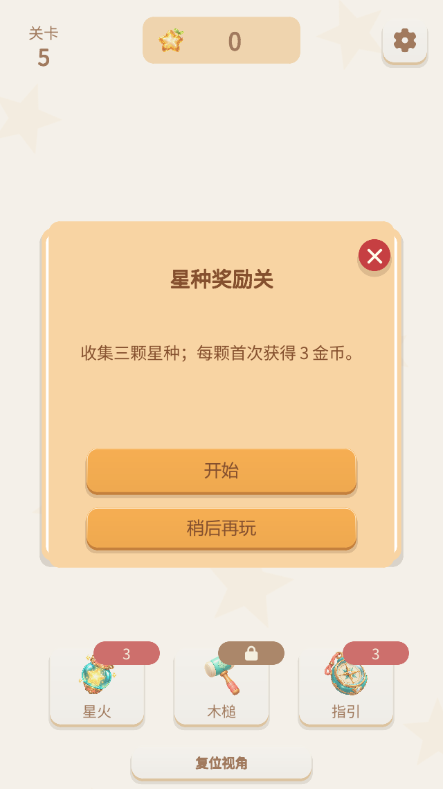
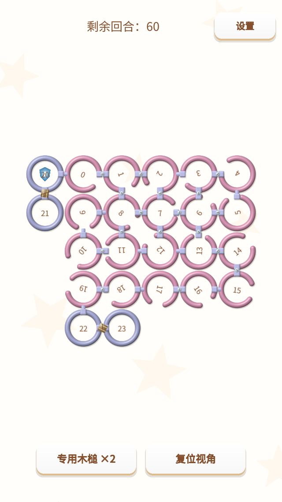

让连接关系成为观察目标
- 观察圆环开口与相互连接的位置。
- 旋转圆环，对齐开口，为相连的环留出解开路径。
- 解开连接、移除圆环，继续处理剩余结构，直到清场。
核心循环保持简短，难度由连接关系与处理顺序展开，避免让识别操作本身成为额外谜题。

GAME DESIGN / 需求、规则与体验迭代
从旋转解扣，到每日挑战与主页换装。
以休闲解谜为原型，练习如何把一次操作的反馈、连续闯关的节奏与下一次游玩的目标接起来。
离线 QA 试玩阶段 · 0.5.0 / code14 · AI 辅助研发。配图为 Unity Editor 原生渲染的演示状态，安卓未实测。
DESIGN INTENT / 让体验接得上
单次解扣需要明确反馈，连续闯关需要节奏变化，完成挑战还需要能看见的奖励。这个原型围绕三件事迭代：旋转与碎裂的反馈、炸弹与奖励关的穿插、每日高难与海狸换装的衔接。
Home 承接普通进度、挑战入口与外观选择，让短局操作与长期目标出现在同一条阅读路径中。
本页展示需求与设计判断，以及 AI 协作后的实现结果；不将演示进度视为真实玩家记录。

CORE LOOP / 操作与信息反馈
核心循环保持简短，难度由连接关系与处理顺序展开，避免让识别操作本身成为额外谜题。
接受拖动的环显示绿色细描边，环体保留原色：绿边说明当前操作对象，原色继续帮助辨认结构。解开后的同色碎裂、清场庆祝与分阶段结算，分别承接局部成功、整局完成与奖励确认。
这里的策划重点是反馈的信息分工；实体触控、音感与震动仍需安卓设备验证。

LEVEL RHYTHM / 压力与放松
在普通流程中自然穿插 30 个炸弹关与 30 个奖励关，让玩家沿用已经学会的旋转解扣操作，面对不同的决策重心。两类特别关保留普通进度与连胜的边界。
以有效操作回合构成炸弹压力，促使玩家先观察关系，再选择动作。目标是增加判断的紧迫感，而不是单纯要求更快拖动。

没有秒数倒计时，允许部分结算。玩家可以把注意力放在收集过程与奖励确认上，为连续解谜留出节奏缓冲。

我确认特别关数量、类型与穿插方向；具体排程、数值及进度处理由 AI 协作完善和实现。
DAILY CHALLENGE / 把高难写成可验证规则
我要求完成 10 个普通关解锁、每天一次、复杂大关、至少使用 2 次本局工具，并以新皮肤作为胜利奖励。解锁判断使用已完成普通关数，不能靠加载更后面的关卡跳过门槛。
AI 辅助落地的首题为 24 环、29 扣。两个封闭结构使清场至少需要 2 次清除；这是结构约束，并非胜利前强制扣除工具。关键目标与核心操作的先后顺序收敛，不代表整局只有唯一解，可交换步骤仍有选择空间。
复杂结构增加信息密度，大环有利于识别和拖动，也会挤压棋盘空间。需要同时检查开口辨认、遮挡与可抓取区域；当前 Editor 画面只能检查可读性，实体手指下的触控取舍仍待验证。
24 环、29 扣的结构、证明与恢复处理是 AI 辅助方案及实现；个人贡献以已明确提出的目标和规则要求为界。

REWARD LOOP / 挑战有去处
外观不提供数值加成。挑战的价值通过可见的角色变化延续，不让高难奖励成为后续关卡的战力门槛。已有外观不重复发放经济奖励，也需要在结算和存档中保留一致结果。
OWNERSHIP / 需求策划与 AI 协作
当前工程有 75 个真实 UI Prefab。验收不只看界面是否像样，还要看固定页面与弹窗能否分开维护，以及解锁、消耗、失败、奖励和存档恢复是否前后一致。八语言与竖屏适配作为交付约束保留，不据此推定所有设备和语言都已完成实际体验验证。
这是 AI 辅助研发的个人原型实践。策划价值在于需求拆解、规则边界、迭代优先级与质量判断；实现结果不等同于个人逐行独立编写代码。
DELIVERY / 当前交付阶段
已交付 0.5.0 / code14 Android 独立 QA 试玩包，已有 Unity Editor 验证与 APK 静态校验。当前成果可以说明规则、界面和交付闭环；设备上的触控、长局表现与实际运行仍需继续验证。
依据 2026-11-18 核对的既有实现与 0.5.0 交付记录整理；图中模拟进度仅用于演示和验收。
返回首页个人作品 ↑